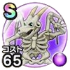

スカルゴン
ほこら、試練の扉ドルクマこころ最大コスト+4じゅもんダメージ+5%ドルマ属性じゅもんダメージ+10%ヒャド属性耐性+7%呪い耐性+5% / 7.0点
くわしい特徴
【ランク特殊効果】 ドルクマこころ最大コスト+4じゅもんダメージ+5%ドルマ属性じゅもんダメージ+10%ヒャド属性耐性+7%呪い耐性+5%

ほこら、試練の扉ドルクマこころ最大コスト+4じゅもんダメージ+5%ドルマ属性じゅもんダメージ+10%ヒャド属性耐性+7%呪い耐性+5% / 7.0点
【ランク特殊効果】 ドルクマこころ最大コスト+4じゅもんダメージ+5%ドルマ属性じゅもんダメージ+10%ヒャド属性耐性+7%呪い耐性+5%